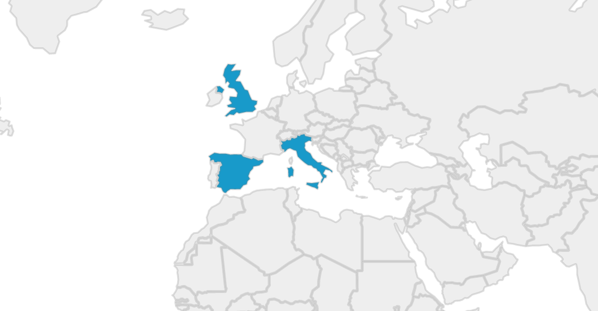
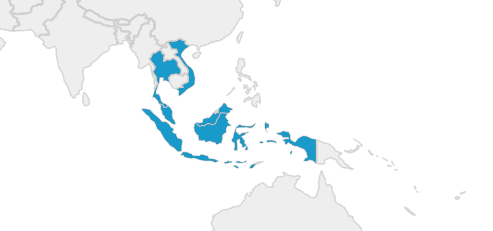

Education
Tertiary
Graduate Certificate in Interaction Design
University of Queensland, 2020 - This degree explored methods for designing user interactions with technology. Most of the coursework was based around research methods for determining user needs and requirements, and how these could be incorporated into the design of new products, services, and technology systems.
Employment
Skills
Travel
An avid traveller, I've now visited over 27 countries across 5 continents.
North America

The United States
For almost two years I lived in New York, the city that never sleeps. I lived here while I worked for the Hon. Kevin Rudd, 26th Prime Minister of Australia, in his capacity as President of the Asia Society Policy Institute. I took up residence first in Manhattan, before moving to South Williamsburg. Most of my time in the US was spent moving between New York and Washington, D.C.
Europe
I've lived, travelled, and worked in Europe on a few separate occasions over the last couple of years.
Italy
Based out of Lago di Como in the north of Italy, I lived here breifly with the Hon. Kevin Rudd as we finished writing his autobiography. He had started this project from the picturesque Bellagio. We set up shop in a villa in the historic comune of Blevio, in the restored Villa Calvi. During this time I travelled throughout the north, visiting Venice, Milan, Torno, Turino, and Verona.
I later returned to Italy in 2019, spending close to a month recovering and relaxing in Rome. During this time I visited the Vatican, practiced my Italian, and immersed myself in Southern Italian culture.
The United Kingdom
Between 2015 and 2017, London became my getaway from the hectic work life I had in New York. I'd periodically fly to the capital to take a break, refresh myself, and explore the highlights of British culture. I've not nearly spent enough time here. I was, however, lucky enough to encounter the Queen's escort on my first day in the country, as they transported the Crown Jewels in their heavily guarded entourage. Quite a sight.
Spain
Spain marked the conclusion of my epic cross-continent adventure across Africa. I spent just a few short days in Barcelona, hemorrhaging what remained of my travel budget on expensive Spanish cuisine and tourist traps. The country is beautiful, the food is incredible, and the people are nice. Spain deserves a much longer visit.
Africa
Crossing Africa. The adventure of a lifetime. I had just quit my job, exhausted after half a decade of politics, and on a whim bought myself a one-way ticket to South Africa. I had no plans, no contacts, no real agenda. Just a backpack, a camera, and a wad of US bills to exchange for local currencies along my way. With years of traveling and backpacking under my belt, I thought I was more than capable of handling what Africa had to offer. Little did I realise just how much of an adventure it would be.

South Africa
As one of the BRICS, I'd long heard about the economic prosperity of South Africa. The continents only member of the G20, South Africa had presented as a land of promise in a still-developing Africa, a country which managed to rally after years of apartheid to come together as a serious contender for regional hegemony, and example of what a developed African nation could be. What I found in South Africa was far from that dream.
Endemic poverty, corruption, and violence plagues Johannesburg. On arrival, I was told about taxi drivers burning uber drivers alive. How you couldn't stop at traffic lights for fear of being carjacked. The currency had collapsed, lawlessness had been spreading across the country. It was not the country it had once hoped to be.
Not all is bad about Joburg, or "Jozi" as it's known. The hipster, college-student district of Maboneng is lively and eventful, hosting colourful markets, music, and food. The suburb of Observatory is populated by warm and welcoming people, keen to banter with a talkative Australian bloke. South Africans are generally nice and open, and happily talk about the nuances of the culture and cuisine.
Ultimately, my time in South Africa was short - Joburg was my stop-over between visits to Mozambique, Botswana, and Namibia. I hope I can visit there again, at a time when it's more safe to do so.
Mozambique
A country with an incredible history, and amazing cuisine. It's hard to summarise what Mozambique is today. The country is one of the only modern countries to rebuild after a period of civil war without the involvement of a Court of Transitional Justice. The fifteen year conflict between FRELIMO and RENAMO ended in only 1992, and the country still clearly bears the scars. Roads remain destroyed, and the journey from south to north is long and treacherous. Yet, despite ongoing tensions, the conflict had led to a political resolution, with RENAMO being incorporated as the opposition political party in recent government elections.
Geographically, the country is stunning. Long stretches of gorgeous beachfront meet the Indian Ocean, where annual whale migrations draw tourists to the paradise towns of Tofo, Vilanculos, and Ponta do Ouro. Further north, the Bazaruto Archipelago is home to one of the most stunning reefs you will ever set your eyes upon. The cities are an eclectic mix of Portuguese, Soviet, Chinese, and American archicture. The food, built around spicy Portuguese peri-peri chicken, is worth a visit alone.
Botswana
Namibia
Zambia
Tanzania
Malawi
Kenya
Ethiopia
Djibouti
Somalia
Asia
Malaysia
Indonesia
Thailand
Vietnam
Maldives
Singapore
Australia
Home. My birthplace. The country I always return to. Paradise.

I was born in Melbourne, but I've lived most of my life in sunny Brisbane, Queensland. It's a great place to come back to - beaches are nearby, the weather is generally quite moderate, and the city isn't as busy or serious as some of the larger capitals down south. It's a place I will always call home.